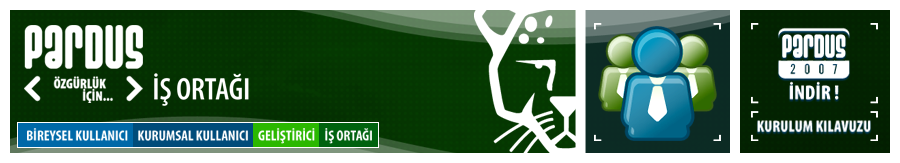

|
Chip dergisinin Ocak 2007 sayısında Pardus 2007 CD'si veriliyor. Duyduk duymadık demeyin, satın alın, kullanın!! |
Pardus Çözümleri
Nasıl Birlikte Çalışabilirz?
|


Bu web sitesinde bulunan bilgi ve belgelerin, kaynak gösterilmek koşulu ile kullanılması serbesttir.
Pardus markası ve logotipi TÜBİTAK'ın tescilli markasıdır. Kullanım koşulları için Yasal Uyarı bölümünü inceleyiniz.
Bilgi ve önerileriniz için bilgi at pardus.org.tr
TÜBİTAK - UEKAE, PK.74 41470, Gebze / Kocaeli.